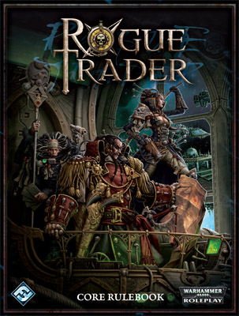

 In Rogue Trader, you can explore the universe of Warhammer 40,000 like never before. Vast fortunes await on the edges of the galaxy, if you and your fellow Explorers can muster the courage to find and claim them. Renown and riches reward the bold, but the unwary find only anonymous deaths. A Rogue Trader who can wrest profits from a dangerous universe through luck, cunning, or sheer force of will enjoys something few humans in the 41st Millennium even know—a life of adventure and true freedom.
Such a course, however, is often fraught with peril. Foul aliens, pernicious raiders, and even other Rogue Traders stand in your way on the path to greatness. Your wits, luck, skill, and courage will be tested to their utmost limits. To survive is to face even greater challenges—and to wield even greater power.
While Rogue Trader focuses on a different aspect of the Warhammer 40,000 universe, the rule system is compatible with Dark Heresy. If you choose, characters from Dark Heresy can easily be integrated into a Rogue Trader campaign or vice versa. The Rogue Trader core rulebook provides all the rules necessary to enjoy a complete roleplaying experience in the grim darkness of the far future.Gra fabularna (inaczej RPG, z ang. role-playing game, nieraz zwana grą wyobraźni, potocznie erpegiem lub rolplejem)
Warhammer 40,000 (w dosłownym tłumaczeniu Młot Bojowy 40000, lub Wojenny Młot 40000) – strategiczna gra bitewna o rozległym tle fabularnym, zakładająca rozgrywkę dla dwóch, lub więcej graczy przy użyciu miniaturowych modeli pojazdów, żołnierzy i innych obiektów, opracowana przez brytyjskie studio Games Workshop.